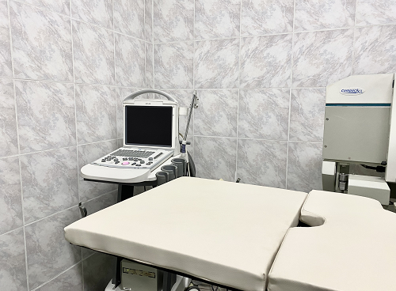

LITOTRICIA EXTRACORPÓREA
La litotricia extracorpórea es un tratamiento no invasivo que consiste en la fragmentación de la litiasis,
a través de la aplicación de ondas de choque generadas externamente,
decir fuera del cuerpo. El impacto de esta energía en el calculo, permite que este se desintegre
y asi poder eliminar los fragmentos convertidos en arenilla a través de la orina.
Beneficios:
- La litotricia extracorpórea es un tratamiento ambulatorio.
- No existen límites de edad para su aplicación
- Puede utilizarse en la mayoría de los casos de cálculos de la vía urinaria.
- No requiere anestesia.
- Es un procedimiento no invasivo de gran eficacia.
- Evita la cicatriz de la cirugía.
- Mínimo riesgo de complicaciones.
- Menor riesgo de infección.
- El tiempo de recuperación se reduce a horas.
- No permite que usted baje su capacidad laboral al tener un rápido retorno al trabajo.

La litotricia extracorpórea permite el tratamiento de los cálculos urinarios sin cirugía. Estos cálculos deben tener un tamaño menor a 2 cm.
El tratamiento es ambulatorio.
Con los buenos equipos no es necesario el uso de anestesia.

Se puede realizar en pacientes con patología cardíaca.